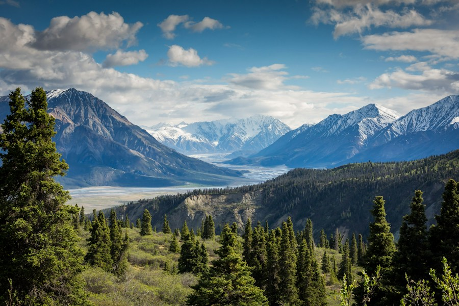

Europa · Naturaleza
Alpes
Montañas y lagos para imaginar una ruta a tu propio ritmo.
Conoce el destino
Información del destino
Montañas y lagos para imaginar una ruta a tu propio ritmo. Esta ficha es una propuesta inicial para organizar tu recorrido.
- País o región
- Europa
- Experiencia
- Naturaleza
Clima y temporada
Lugares de interés y actividades
Idea de recorrido: un paseo junto a un lago, una caminata señalizada y una visita a un pueblo de montaña. Elige primero una localidad concreta; los Alpes abarcan varios países y las rutas dependen del punto de partida.
Recomendaciones
Define un presupuesto para transporte, alojamiento, alimentación y actividades. Consulta las condiciones de cada servicio con los proveedores correspondientes.